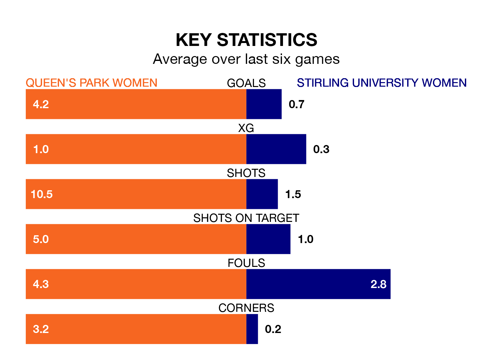

Relegation candidates Stirling University Women face a challenge away against high-flying Queen's Park Women at Lochinch Pavilion on Sunday.
Stirling University Women are rooted to the bottom of the SWPL 2 table, and have picked up four wins and four draws in their 22 games to date.
Queen's Park, meanwhile, are top of the standings with 56 points, having won 18 and drawn two.
With 79 goals in 22 games so far this season, Queen's Park are the league's highest scorers with 3.6 goals per game. And they are conceding fewer than average, letting in 16 goals at a rate of 0.7 per game.
Stirling University, meanwhile, are below average scorers, with 0.8 goals per game, compared to a league average of 1.8. They have conceded 3.2 goals per game.
The home team are in fantastic form in SWPL 2, with five wins and a draw from their last six games.
With a win and a draw over that period, the visitors' form is much worse – they have taken four points from 18, compared to Queen's Park's 16.
In the last 10 years, Queen's Park and Stirling University have played each other on 13 occasions. Queen's Park won eight of them, Stirling University three, and they drew twice.
On average, Queen's Park scored 3.5 goals and Stirling University 1.2 in those matches.
Their last meeting was on February 11, when Queen's Park won 12-0 away.
Queen's Park's last match was on March 31, a 2-0 win against Gartcairn Women, with getting the goals for Queen's Park.
Stirling University lost 1-0 against St. Johnstone Women last time out, also on March 31.
Updated: 11:20 (UTC), 09/04/24